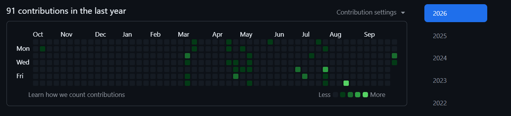
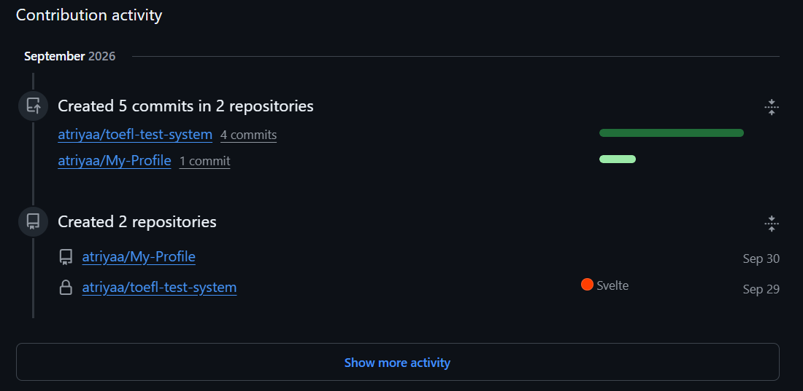

Anisa Triyana (Anisa)
Motivasi Hidup
Saya percaya bahwa kemampuan tidak terbentuk secara instan, tetapi melalui proses belajar, mencoba, gagal, mengevaluasi, dan memperbaiki diri secara terus-menerus.
Kemampuan Teknologi
// Dikuasai
// Sedang Dipelajari
Proyek yang Telah Dibuat
atriyaa/Inventaris
Publicatriyaa/absensi_logMoodBE
Publicatriyaa/kenangan-tegalGondo
Publicatriyaa/toefl-test-system
PrivateUniversity TOEFL Test Management System built with SvelteKit and TypeScript.
atriyaa/InventarisLabBE
Publicfarizi27/absensi_logMoodFE
Publicatriyaa/My-Profile
Public • P1 — Tugas ProfilPortofolio saya yang menjelaskan perjalanan saya selama 1 semester kedepan
Tautan RepositoriBukti Commit
// Output dari perintah: git log --oneline -5
a1b2c3d (HEAD -> main, origin/main) docs: update README.md and complete P1 task requirements
e4f5g6h style: apply pastel theme with Tailwind CSS
i7j8k9l feat: add education history and commit log components
m0n1o2p feat: add initial bio section, skills, and project details
q3r4s5t init: initial commit with basic HTML structure
Grafik Kontribusi — 91 contributions in the last year

Oct – Sep • Less → More • Tahun aktif: 2026
Aktivitas Kontribusi — September 2026

5 commits di 2 repo • 2 repo baru (Sep 29–30)
September 2026 — Created 5 commits in 2 repositories
• atriyaa/toefl-test-system — 4 commits
• atriyaa/My-Profile — 1 commit
Created 2 repositories
• atriyaa/My-Profile — Sep 30
• atriyaa/toefl-test-system (Svelte) — Sep 29
Riwayat Pendidikan
| Periode | Perguruan Tinggi / Sekolah | Jurusan | Pengalaman |
|---|---|---|---|
| 2024–sekarang | Universitas Madura | Informatika | Asisten Lab (target) |
| 2020-2023 | SMK Negeri 1 Pademawu | Rekayasa Perangkat Lunak | Magang di Telkom Regional V |
Konsep Tema Tampilan
Pilihan Tema: Pastel Lembut
Halaman biodata ini menggunakan tema pastel dengan latar belakang krem pink (#FFF6F9), kartu putih, aksen pink lembut (#F472B6), lavender (#A78BFA), mint (#34D399), peach (#FB923C), dan sky blue (#38BDF8). Tema ini dipilih untuk memberi kesan ramah, cerah, dan modern dengan sudut membulat, bayangan lembut, serta font Inter + Fira Code yang tetap terbaca.